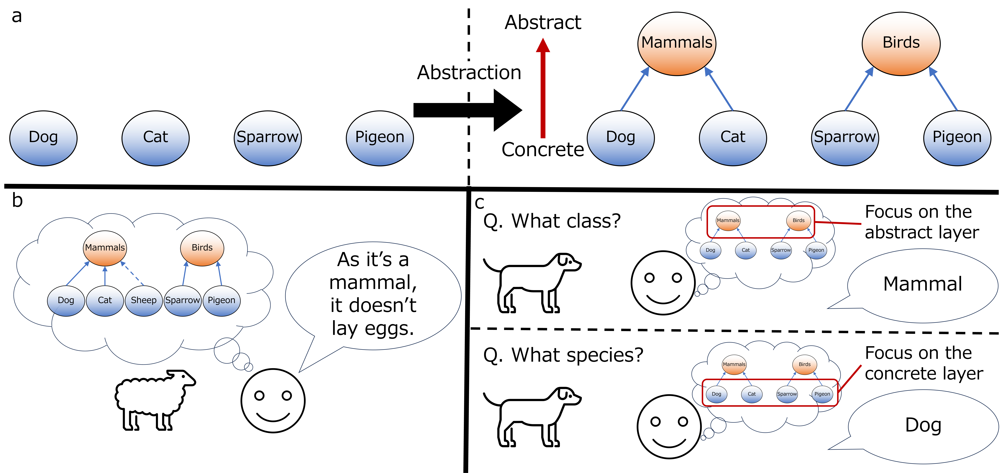

Mathematical Modeling of Intelligence
Throughout history, humanity has imagined and created a vast range of things. From science and technology to the arts, intelligence is an essential component of human activities. It’s no exaggeration to say that intelligence is what defines us as humans.
Here comes a question: how does the brain exhibit intelligence? The goal of my research is to mathematically elucidate the mechanisms by which the brain demonstrates intelligence. To this end, I am working on building brain-inspired models capable of intelligent behavior. These models are based on the Free Energy Principle (FEP), a theory that aims to explain a wide range of brain functions—spanning from perception to action—within a unified framework. By grounding the model construction in the FEP, I aim to create a general-purpose model that can adapt to various situations.
However, simply saying that “I'm working on mathematical modeling of intelligence” lacks concreteness, since the term "intelligence" is broad and ambiguous.
In my research, I focus on a specific capability I consider fundamental to intelligence: the ability to abstract from individual experiences and adapt to novel situations.
Specifically, I aim to model the following three abilities:
1. Acquisition of abstract representations
2. Transfer learning and generalization using these abstract representations
3. Adaptive selection of the appropriate level of abstraction depending on the situation
Figure 1 illustrates examples of these abilities.
Please look forward to upcoming publications where I will share more concrete ideas and methodologies. Wish me luck!

Figure 1: Acquiring Abstract Representations and Using Them for Generalization and Adaptive Behavior
(a) Abstracting individual concepts acquired through learning (left) to form higher-level abstract concepts (right).
(b) Using abstract concepts to infer unknown properties when encountering a new concept (e.g., a sheep) for the first time.
(c) Switching the level of abstraction used in response to questions to select the most appropriate concept (red frame) for response.
What Is Intelligence?
What exactly is intelligence or intelligent behavior? Here are some answers I've received when asking people around me the same question:
- The ability to act flexibly and adapt to different situations
- Generalization ability (e.g., people who can apply what they’ve learned to different things are considered intelligent)
- Creativity (e.g., people who come up with ideas I could never imagine are considered intelligent)
- High computational ability (e.g., people who can solve difficult problems or solve them quickly are considered intelligent)
- Rational judgment and behavior (e.g., people who aren’t swayed by emotions are considered intelligent)
- Being knowledgeable (Interestingly, some people said that being knowledgeable is unrelated to intelligence)
As an example, I earlier proposed an answer: the ability to acquire abstract representations and use them to generalize.
However, I believe there are other important and fascinating components of intelligence as well.
One example is meta-learning, which I am currently exploring and working on idea generation, in parallel with my research on abstraction.
Having considered the above, what does intelligence mean to you?
If you have a different perspective from those listed above, I would love to hear your thoughts via this
Google Form,
or please feel free to email me directly.
All opinions are welcome. If I find your perspective particularly thought-provoking, it could help open up a new direction in my research.
Does the Free-energy Principle Have a Neural Implementation?
The free-energy principle is a theory of the brain that seeks to explain a wide range of brain functions—including perception, action, and learning—through a single computational principle grounded in information theory: free-energy minimization. In particular, the framework that treats action as a form of inference through free-energy minimization is known as "active inference" and has attracted considerable attention. Meanwhile, because the free-energy principle has developed primarily as a phenomenological theory, how such computations are actually realized in the brain has remained insufficiently explored.
To address this question, Isomura et al. (2022) showed that the neural activity and synaptic plasticity of canonical neural networks—a biologically plausible neural network model—are mathematically equivalent to inference and learning of an agent that performs active inference through free-energy minimization. In other words, neural dynamics can be theoretically interpreted as performing inference about the external world and selecting actions. This theoretical prediction is now being tested experimentally in biological neural systems. Using cultured neural networks, Isomura et al. (2023) demonstrated that changes in neural activity and synaptic strengths can be quantitatively predicted through free-energy minimization. Furthermore, using zebrafish, Isomura et al. (2025) reported that individual differences in learning trajectories can also be predicted through free-energy minimization.
Together, these studies suggest that the free-energy principle is not merely an abstract theory that retrospectively explains observed phenomena. Rather, it is developing into a falsifiable theory of the brain that has explicit relationships with concrete neural dynamics and can generate quantitative predictions for experimental data. Therefore, the answer to the question “Does the free-energy principle have a neural implementation?” is currently taking shape through a concrete hypothesis about its implementation (i.e., canonical neural networks) together with a growing body of supporting experimental evidence.
A Scale-Invariant Model of the Brain
As discussed in Does the Free-energy Principle Have a Neural Implementation?, canonical neural networks (CanonNNs) are a promising candidate for how the free-energy principle may be implemented by neural circuits in the brain. However, one important problem remains. The free-energy principle is a theory that aims to explain a wide range of phenomena, including perception, learning, and behavior at the level of the whole organism. CanonNNs, on the other hand, were originally formulated as models describing the activity of individual neurons. In other words, there is a mismatch in scale between a model of single neurons and a theory that explains the behavior of an entire organism.
To address this problem, we consider the “coarse-graining” of CanonNNs. Coarse-graining is a way of describing a system at a larger scale by grouping together its many individual components. For example, representing the activity of many neurons by their average activity is one form of coarse-graining. Remarkably, we theoretically found that, when CanonNNs are coarse-grained, statistical quantities describing population neural activity also follow dynamics of the same form as the original CanonNNs. This means that CanonNNs can describe not only individual neurons, but also populations of neurons. Moreover, this coarse-graining procedure can be applied repeatedly. By progressively grouping individual neurons into small neural populations, and small populations into larger brain regions, CanonNNs may provide a common mathematical structure of neural dynamics across scales, from single cells to behavior. We are currently validating this theoretical finding using empirical data. Further details of the theory and the validation results will be available in an upcoming preprint.
Synaptic Pruning Is Equivalent to Bayes-Optimal Generative Model Selection
In the published paper, we introduced our study from the perspective of general neuroscience. Here, I take a different perspective and explain the significance of our findings within the frameworks of the free-energy principle and Bayesian inference.
Whether Bayesian inference works successfully depends heavily on whether the brain's "generative model" appropriately reflects the external world. A generative model is a set of assumptions held by an agent, such as the brain, about the process through which sensory information is generated in the external world. The brain is thought to use this generative model to infer the causes of observed sensory information. In many studies, the structure of the generative model is specified in advance by the designer of the agent, and the focus is placed on inferring external states and optimizing model parameters under the given generative model. However, the real brain is not initially provided with a generative model that correctly reflects the causal structure of the external world and must therefore learn which elements are causally related. In other words, through experience, the brain must autonomously acquire not only the model parameters but also the structure of the generative model itself.
The process of selecting the most appropriate generative model is called "model selection." Karl Friston, who proposed the free-energy principle, and his colleagues have also proposed a framework called Bayesian model reduction (BMR), which removes unnecessary model parameters and thereby selects a simpler and more appropriate generative model. However, although BMR mathematically describes how a generative model should be selected, discussions of how this computation is implemented in the actual brain remain phenomenological. Therefore, the situation regarding the neural implementation of model selection was similar to that described in Does the Free-energy Principle Have a Neural Implementation?. No neural implementation hypothesis had been proposed that, like canonical neural networks for the free-energy principle, establishes a clear mathematical correspondence between concrete changes in neural circuits and Bayesian model selection and is quantitatively testable using experimental data.
To address this problem, we introduced the elimination of synaptic connections, or "synaptic pruning," into canonical neural networks and theoretically derived synaptic-pruning dynamics that are mathematically equivalent to Bayesian model selection. This means that synaptic pruning enables a neural circuit to autonomously learn the structure of its generative model—that is, the structure of causal relationships in the external world—based on its experience. In the context above, our study proposes a concrete neural implementation of model selection. For further details, please refer to the paper, press release (written in Japanese, sorry), and explanatory video. Below, assuming that you have already read the paper, I provide two additional points from engineering and biological perspectives.
- In this study, we address the problem of model selection by incorporating model selection into the generative model itself. In other words, we eliminate the distinction between "learning model parameters" and "selecting model structure" and simplify the problem by subsuming the latter into the former. We believe that this design principle can be generalized beyond the specific problem considered in this study.
- Synaptic pruning is often described as a process that eliminates "unnecessary connections." This raises the question: what makes a connection unnecessary? Our study answers that unnecessary connections are those that do not contribute to inference from a Bayesian perspective.
Finally, as an aside, we christened this synaptic-pruning-based model-selection method Bayesian synaptic model pruning (BSyMP). As mathematically demonstrated in the paper, BSyMP guarantees that the structure of the neural circuit, or the corresponding generative model, becomes sufficiently simple. This property is the origin of the name BSyMP: The structure will be simple; it will B SyMPle.
Evolution of My Research Interests
I might someday write something about how my interests have evolved, starting from my early days doing experimental research—if I'm inclined to do so.